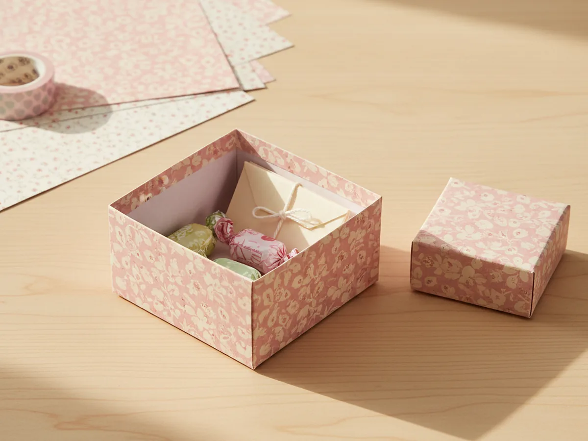
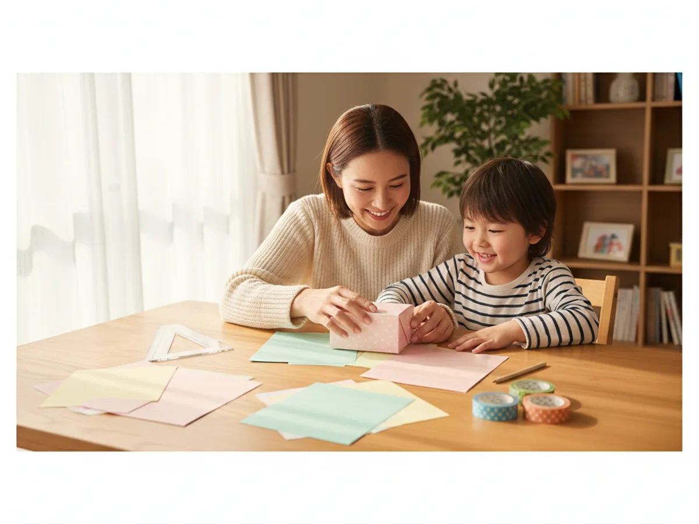
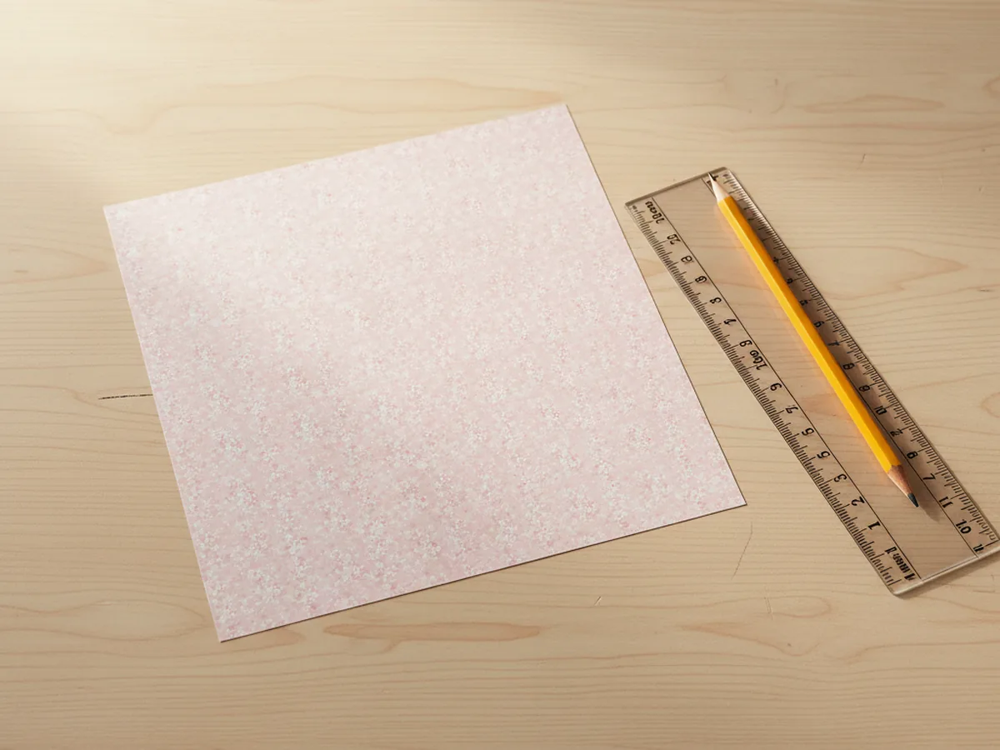
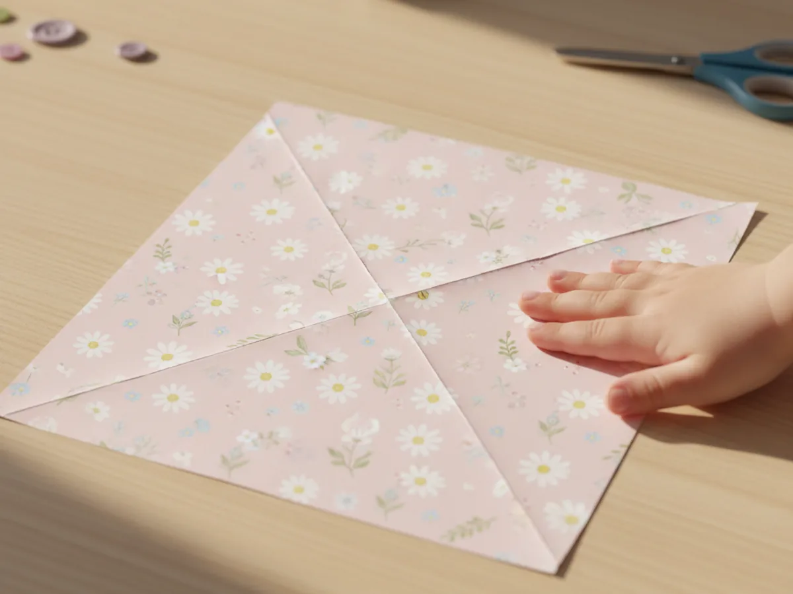
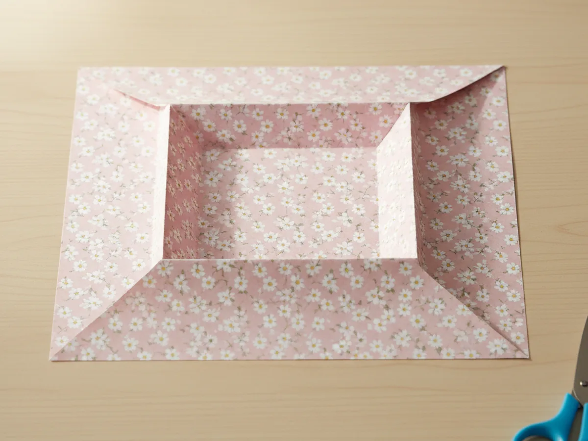
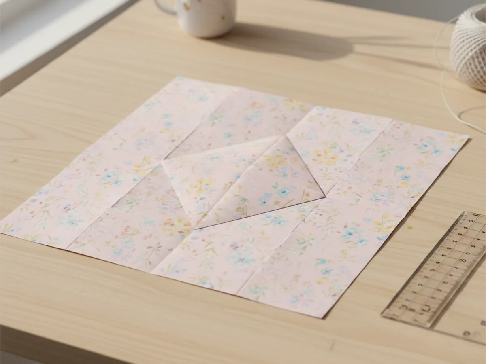
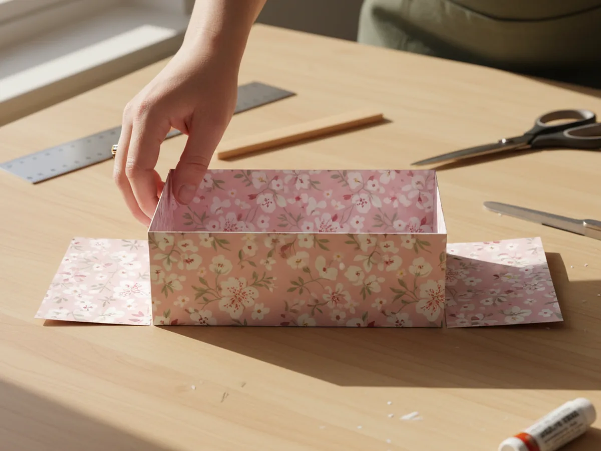
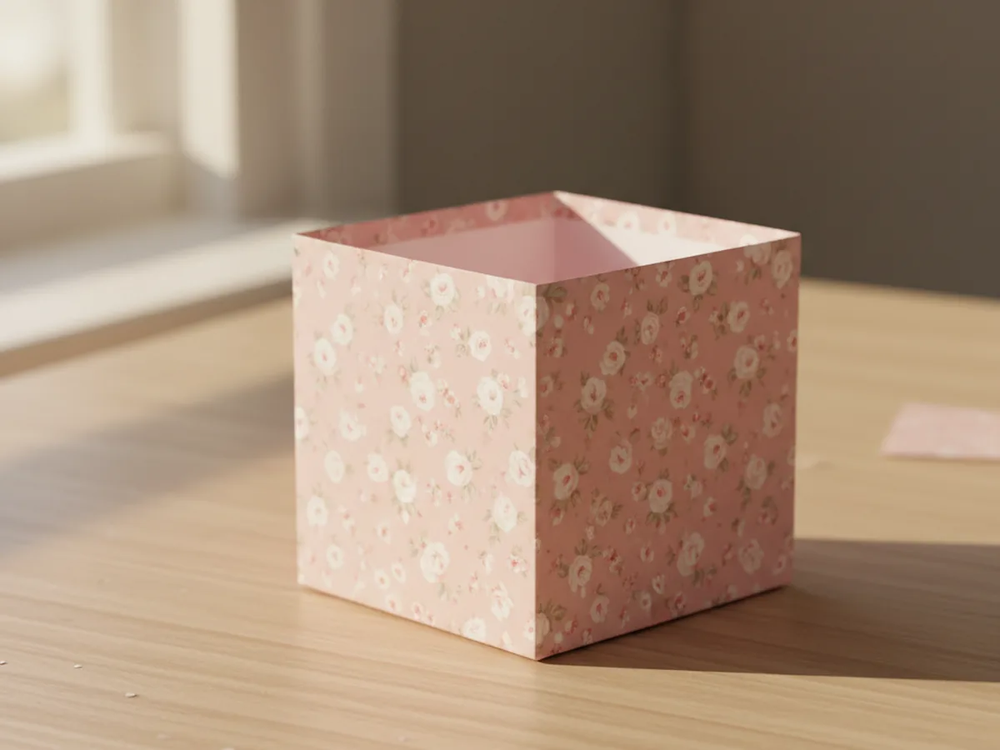
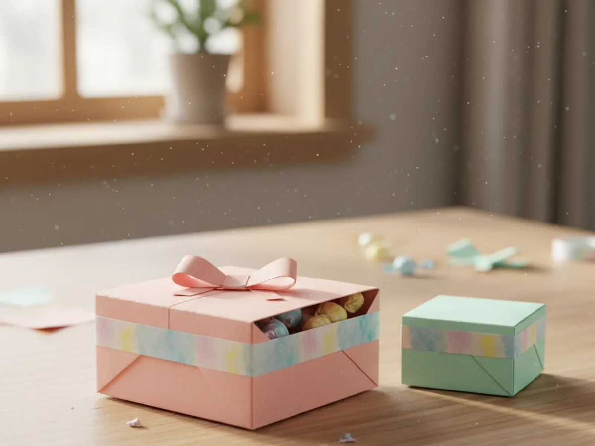

If your child has ever begged to wrap up a "present" with whatever scraps you had lying around, this box craft paper tutorial is going to feel like a sweet little win for both of you. With one square of pretty cardstock and about half an hour at the kitchen table, you and your little one can fold a real working paper gift box without scissors, without glue, and without any messy clean-up. 🎁
The best part about this paper box craft is that it feels almost magical when it pops open into a real three-dimensional shape. Even a five year old can manage most of the folds with a little guidance, and once they make one, they will almost certainly want to make ten more. Each box is the perfect size for a tiny gift, a handful of candy, a special rock, or a folded note from your child to grandma.
Why Kids Love This Craft
There is something genuinely thrilling about watching a flat piece of paper turn into a three-dimensional box right between your fingers. For a young child, the moment the walls of the box craft paper stand up is pure wonder. They made that. With nothing but folds. That feeling of "I just made something real" is one of the best things crafting can give a child.
This project also quietly builds useful skills. Pressing creases sharply, lining up edges, and following a sequence of steps all support fine motor control, spatial reasoning, and patience. Because the folds are repeated symmetrically, kids often catch on after a few moves and start helping mom along.
And then there is the gift-giving joy. A child who has made a handmade paper box almost always wants to fill it with something special for someone they love, like a single chocolate for daddy or a tiny drawing for grandma. The box turns the gift into a sweet moment of pride. 💛

What You'll Need
Here is everything you need to make this box craft paper project at home. Lay your supplies out on the table before you sit down with your child so the folding moves smoothly without anyone hopping up mid-project.
- Astrobrights Bright Cardstock Assortment (250 Sheets), sturdy 65 lb paper that holds a crisp fold and keeps its shape.
- Hamilco White Glossy Cardstock (50 Sheets, 80 lb), clean white base for decorating with markers, stickers, or washi tape.
- Crayola Construction Paper (240 Sheets, 12 Colors), great for thinner practice boxes and quick rainbow batches.
- Fiskars 5 Inch Pointed-Tip Kids Scissors, for trimming your sheet into a perfect square if needed.
- Westcott 12 Inch Clear Acrylic Ruler, for measuring an even square and pressing crisp folds.
- EnYan Vintage Washi Tape Set (10 Rolls), for pretty edges, ribbon bands, and decorative trim.
- Crayola Broad Line Washable Markers (10 Classic Colors), for drawing little notes or names onto the lid.
- A pencil, for marking the square if you need to trim.
Step-by-Step Instructions
This box craft paper project is genuinely beginner-friendly, even if you have never folded anything more complicated than a paper airplane. Go slowly, press each fold sharply, and let your little one feel proud at every step. ✨
Step 1: Pick and Prep Your Square Paper
Start with one sheet of cardstock or pretty patterned paper. You need a perfect square for the box craft paper folds to line up cleanly. A good beginner size is about eight inches by eight inches, which makes a finished box roughly two and a half inches wide. If your paper is not already square, use a ruler to mark one and trim with the kid scissors.
Place the square on the table with the patterned side facing down and the plain side facing up. The pretty side will show on the outside of the finished box.

Step 2: Fold the Two Diagonals
Take one corner of the square and bring it across to meet the opposite corner so you form a triangle. Run a finger or the edge of the ruler firmly along the fold to press it flat. Unfold and repeat with the other two corners. When you open the paper, you should see a clear X of creases running corner to corner. These two diagonal creases are the secret guide lines for the entire simple paper box craft.
The sharper these folds are, the easier every later step becomes. Slow your child down here and let them really press each crease.

Step 3: Fold All Four Corners to the Center
You should see a small X dot in the very center where the two creases cross. One at a time, take each of the four corners and fold it inward so its point lands exactly on that center dot. Crease each fold firmly with a fingernail or the side of your ruler. When all four corners are folded in, your big square will have become a smaller square, and the paper will look like a flat envelope with four diamond flaps meeting in the middle.
This is the most satisfying moment of the whole box craft paper project for kids because the paper suddenly looks neat and finished, even though there is still magic to come.

Step 4: Make the Side Creases
Keep the corners folded into the center. Now take the top edge of your smaller square and fold it down to meet the bottom edge, creasing firmly. Unfold. Then take the left edge and fold it across to meet the right edge, creasing firmly again. Unfold. You now have a tic-tac-toe grid of fresh creases on top of your existing diamond shape, and these are the lines that will become the walls of your finished handmade paper box.
These folds can feel a little fiddly for small hands, so this is a good moment for mom to hold the paper steady while your child runs their finger along the crease.

Step 5: Unfold Two Opposite Corners and Lift the Walls
Now comes the moment where flat paper turns into a real box. Gently unfold two opposite corner flaps so they stick straight out, leaving the other two folded in. Your paper should now look like a long rectangle with two pointed ends. Carefully lift the two long sides upward along the creases you already made. The two folded-in corner pieces will rise up too and create the start of two box walls.
Hold those two walls upright with your fingers, since they will not stand on their own yet. Your folded paper box is officially halfway there.

Step 6: Tuck the End Flaps to Form the Box
While holding the two side walls up, take one of the pointed end flaps and fold it up and over the inside of the box, pressing it flat against the inside wall to hold everything together. The triangle point will tuck neatly into the bottom of the box. Repeat the same fold on the other pointed end. Press the bottom of the cute paper box firmly with your fingertips so the inside floor sits flat and the four walls stand up evenly.
This is the wow moment. The box is real, it stands up, and your little one will probably want to clap.

Step 7: Decorate and Fill Your Paper Box
The hard work is done, and now comes the fun. Let your child decorate the outside of the box craft paper project however they like. Wrap a strip of washi tape around the rim for a pretty trim, add a few stickers, doodle a name across the side with markers, or tape a little paper bow on top. To use it as a lid-and-base set, simply fold a second box from a slightly larger square so it can sit snugly over the first one. The simple art of origami is exactly this kind of magic, turning one flat sheet into something useful and sweet.
Fill your finished box with a tiny gift, candy, a folded note, a small painted rock, or anything else worth treasuring. 🎀

Variations to Try
Lidded Treasure Box: Fold a second box from a square that is half an inch larger than the first so it can slip down snugly over the smaller box as a lid. This turns the project into a real keepsake container, perfect for tooth fairy notes or tiny treasures.
Newspaper Recycling Box: Skip the cardstock entirely and use a square cut from a colorful magazine page, old wrapping paper, or a Sunday comics section. Each one looks completely different and gives your box craft paper project a fun eco-friendly twist.
Mini Party Favor Boxes: Cut down small four inch squares and fold a whole batch in coordinating colors for a birthday party or playdate. Fill each one with a few candies or stickers and tie with a thin ribbon for an instant homemade party favor.
Final Thoughts
This box craft paper tutorial is one of those quietly wonderful little projects that ends with something genuinely useful. No glue mess, no scattered glitter, no half-finished pile of supplies on the table afterward. Just a sweet stretch of time at the table with your child, watching plain paper turn into something they can show off and use. 🌷
If you and your little one fall in love with these paper boxes, pin this tutorial on Pinterest so other craft-loving mamas can find it too. Happy folding, friend.
More Crafts You'll Love
If your little one enjoyed folding this paper box, they will love these other sweet paper projects next: